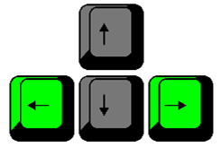

Instructions
You goal is to destroy all of the bricks in the game as fast as you can. There are 3 levels. You can do that by deflecting with a paddle. If the ball touches the bricks, it destorys them. If the ball touches the red line, you lose one of your three lives. If you run out of lives, you lose.
What is on the game field?
On the game field is:
- destroyable (green, yellow and red) bricks,
- when you destroy these bricks, you gain points;
- the ball,
- the ball is a freely-moving object, which can destroy bricks, which you have to deflect with the paddle and direct towards the brick field;
- the paddle,
- you control this object,
- it moves only from left to right,
- it can deflect the ball;
- red line,
- line, which deducts a life if the ball touches it.
How do you gain points?
You get points when the ball destroys a brick, but not all bricks give the same amount of points. Point chart:
| What color brick destroyed? | Gained points |
|---|---|
| Green | 1 |
| Yellow | 2 |
| Red | 3 |
How to control the paddle?
You can control it using a keyboard – the left arrow moves it leftward, but the right arrow moves it rightward. Its goal is to deflect the ball from touching the red line beneath it, and direct it towards the brick field. |
 |
What are levels?
The game has 3 levels – once you destroy all of the bricks in one level, the player is transported to the next level. With every level the game gets harder – the ball's speed increases and the brick field changes.
What are lives? What would happen if the ball touched the red line?
You have 3 lives. If the ball touches the red line, you lose one life. If you lose your last (third) life, you lose the game.
GAME OVER.
If you win, an alert pops up with "WINNER" displayed and the recorded game statistics. Compete with friends and compare your speed!
If you lose, you get the “Game Over” alert and the satistics. If you want to play again, you have to start from the beginning.